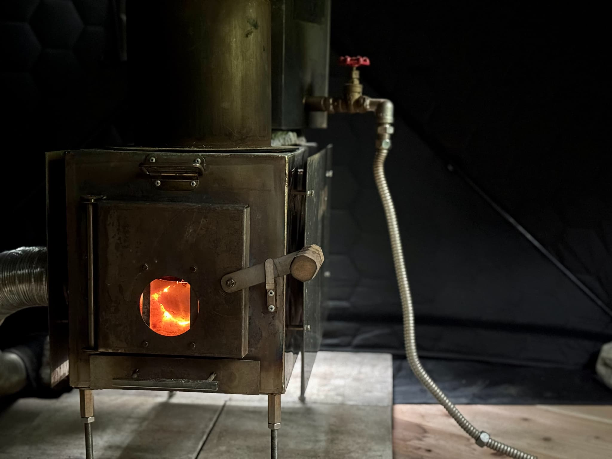
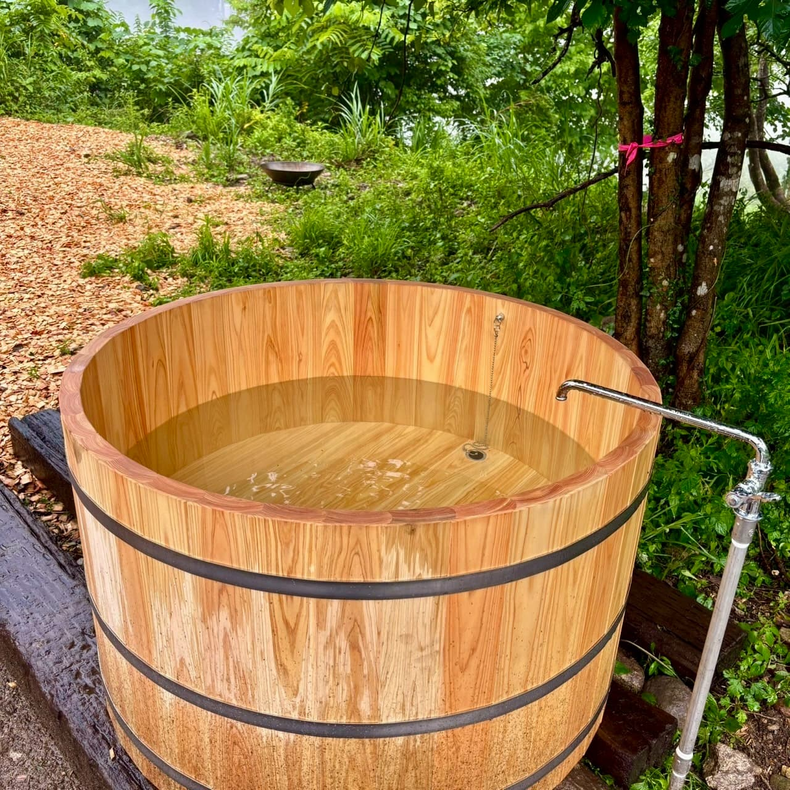
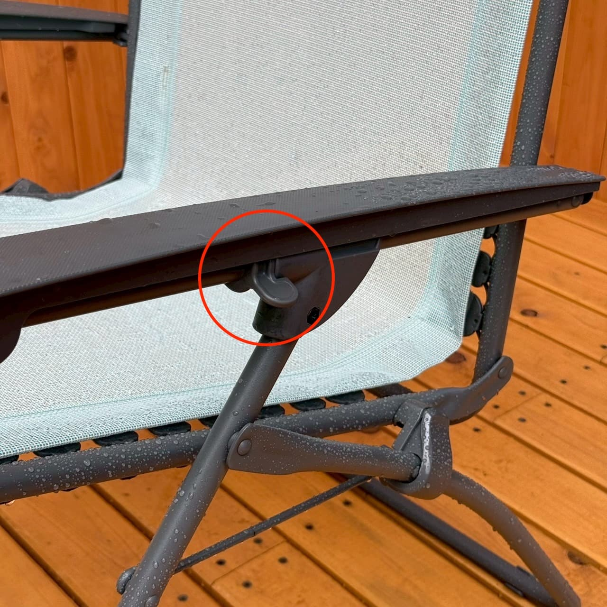
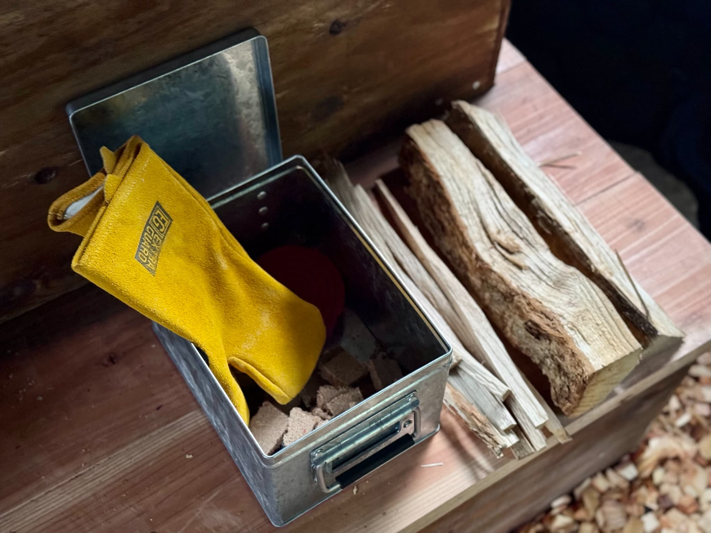
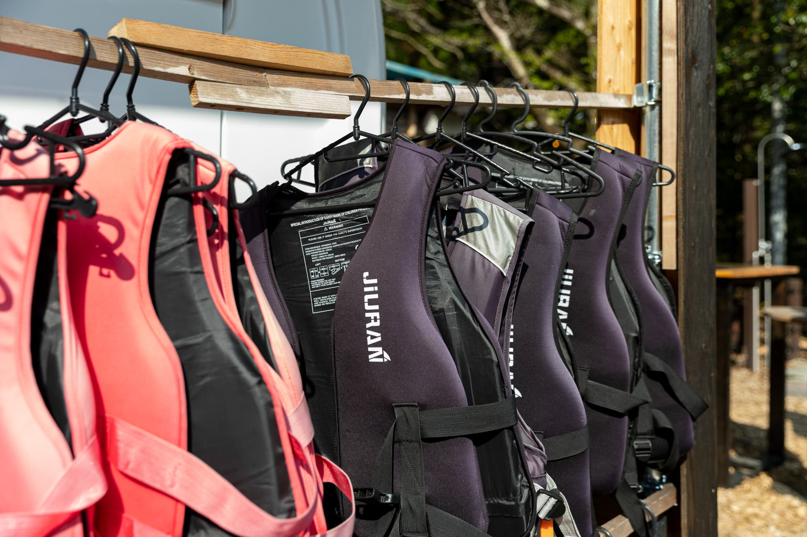
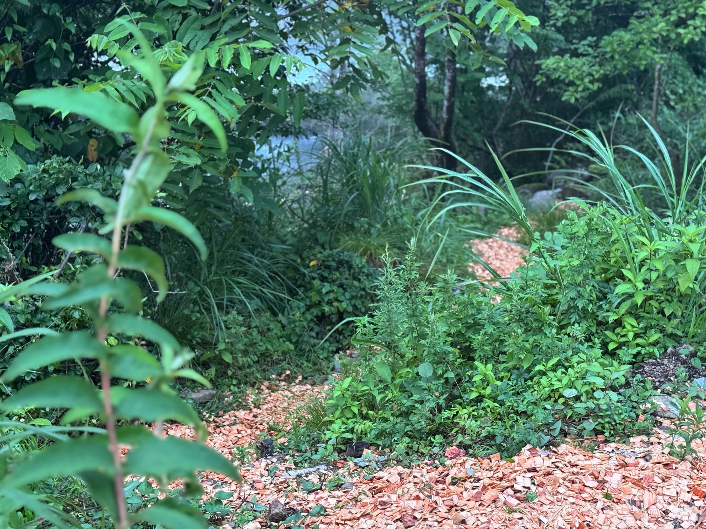
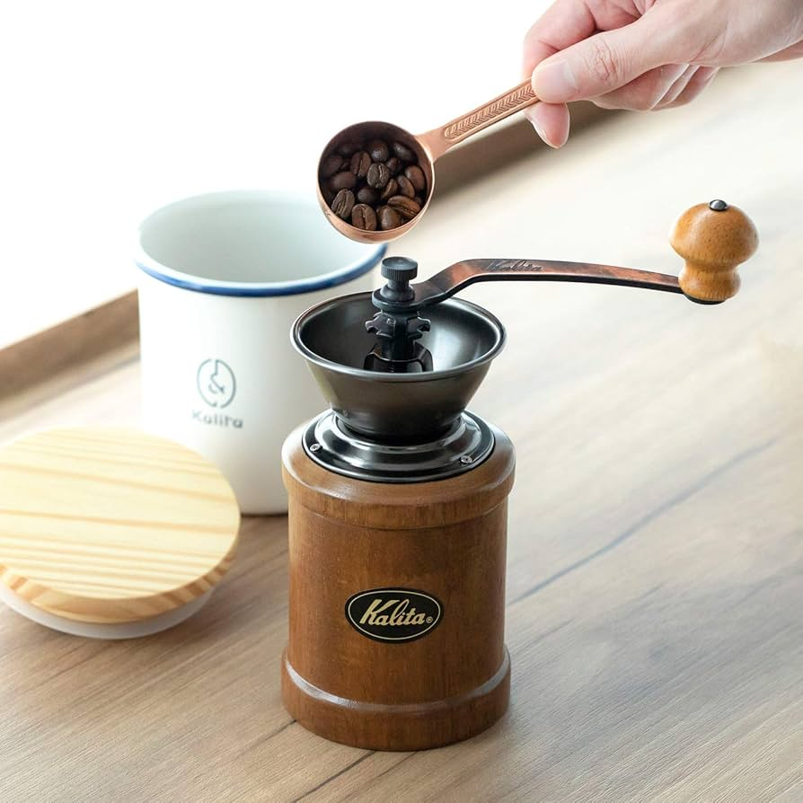
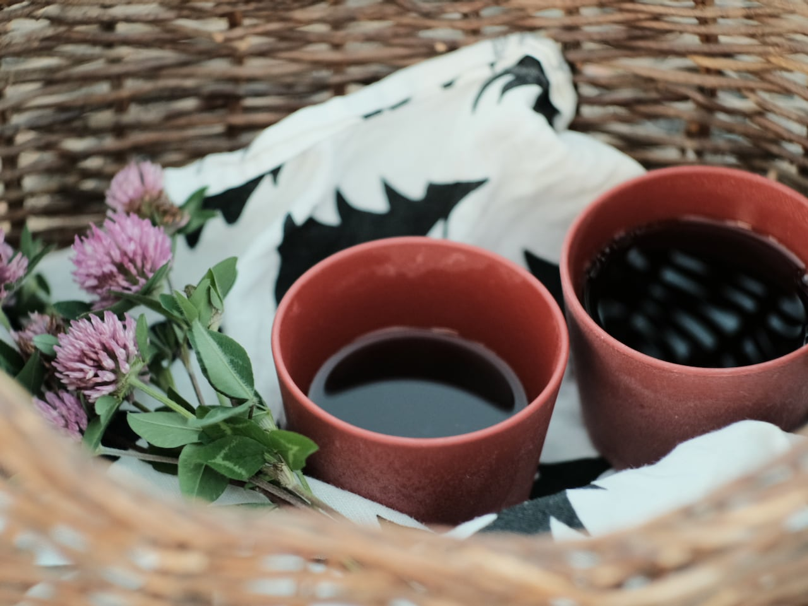

HOW TO ENJOY
YOHAKUの楽しみ方
使い方の前に、まずは過ごし方のヒントを。
YOHAKUには、日常では味わえない体験がいくつも散りばめられています。
1
プライベートサウナで整う
薪をくべて、自分だけのサウナを仕上げる。急がず、ゆっくり。それがYOHAKUのととのい方です。




- おすすめの流れ — サウナ10分 → 川の水風呂1分 → 外気浴5分 を2〜3セット
- ロウリュ — ストーンに水をかけて蒸気を発生。アロマを入れると香りも楽しめます
- 川の水風呂 — 季節によって水温が変わるのも自然の醍醐味。冬は刺激的、夏は心地よい
- 外気浴 — インフィニティチェアに身を預け、空を見上げるだけ。何も考えない時間が訪れます
- サウナポンチョ・サウナハット・水着は無料レンタルあり
2
焚き火を囲む夜
揺れる炎を眺めながら語り合う夜。ホテルでもキャンプでもない、YOHAKUだけの時間。



- マシュマロ — 持参すれば焚き火で焼ける。外はカリッ、中はとろっの焼きマシュマロは鉄板
- 音楽 — Bluetoothスピーカーを外に持ち出して、焚き火×音楽の時間に
- 星空 — 焚き火の明かりを少し落として空を見上げてみてください
- 薪とファイヤーピットは備え付け。夜間の大きな音だけご配慮ください
3
川沿いの散歩
板取川沿いをのんびり歩くだけで、心がリセットされていきます。


- 朝 — 空気が澄んでいて、鳥のさえずりがよく聞こえる時間帯
- 夕方 — 夕日が川面に反射する景色が特に美しい
- 足元が濡れても気にならないサンダルがおすすめ（備品あり）
4
朝ヨガで目覚める
ヨガマットを持ってテラスへ。川の音と朝の冷たい空気が、体を静かに起こしてくれます。
太陽礼拝
キャット＆カウ
チャイルドポーズ
 立木のポーズ
立木のポーズ- 太陽礼拝 — 朝一番におすすめ。5〜10分で全身が温まります
- キャット＆カウ — 背骨をほぐす基本ポーズ。寝起きの体に最適
- チャイルドポーズ — 板取川の音に耳を傾けながら、呼吸を深く
- 立木のポーズ — バランスに集中すると、頭がすっきりクリアに
- ヨガマットは室内にご用意しています。テラス・室内どちらでもどうぞ
5
瞑想の時間
テラスやチェアに座って、ただ川の音に意識を預けるだけ。「何もしない」が最高の贅沢になる場所です。
- 5分間呼吸法 — 鼻から4秒吸い、7秒止め、8秒かけて口から吐く。3セットだけで十分
- 音に集中する瞑想 — 目を閉じて、川・鳥・風の音をひとつずつ拾っていく
- サウナ後の外気浴と組み合わせると、さらに深い体験になります
6
ハンドドリップコーヒー
豆を挽く音から始まる、贅沢な一杯。自然の中で味わう香りは格別です。



- コーヒー豆・ミル・セラミックドリッパーを無料でお使いいただけます
- おすすめのタイミング — 朝イチの一杯、サウナ後の一杯、焚き火のそばでの一杯
- 紙フィルター不要のセラミックフィルターで、環境にも優しい
- 淹れ方の詳しい手順は「客室の使い方」セクションに写真付きで掲載しています
7
双眼鏡で自然観察
備え付けの双眼鏡で、肉眼では見えない世界を覗いてみてください。
- 朝 — 川面に霧がかかる幻想的な景色。野鳥の活動も活発に
- 昼 — 対岸の木々や岩肌の表情を観察
- 夜 — 板取は街灯が少なく星が近い。月のクレーターも見えます
8
サウナの本を読む
室内にはサウナに関する書籍をご用意。読んでから入るか、入ってから読むか。どちらも正解です。
- サウナの歴史や文化を知ると、ととのいの深さが変わる
- 雨の日の過ごし方としてもおすすめ。プロジェクターで映画もどうぞ